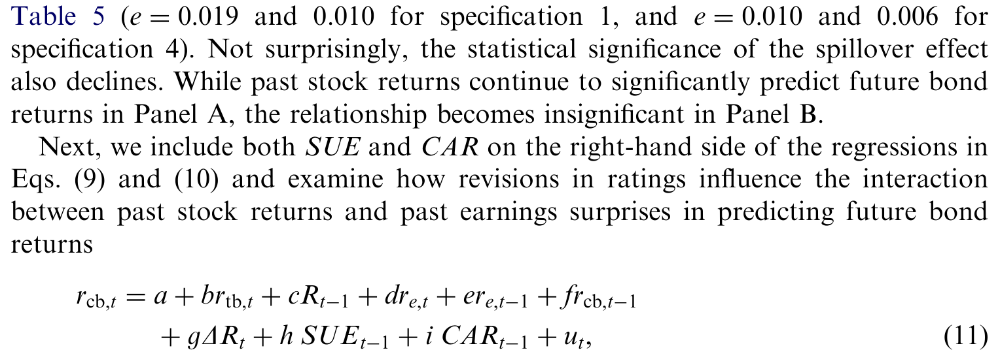
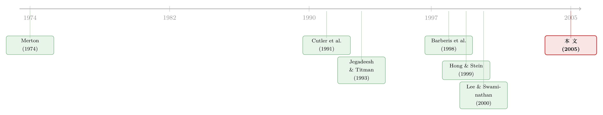

去年股票涨得好，今年的债就更值钱——一条从股市流向债市的「动量暗线」
本文读的是 Gebhardt, Hvidkjaer & Swaminathan (2005, Journal of Financial Economics)：投资级公司债自己【没有】动量（反而有反转），但股票的动量会「溢出」到同一家公司的债券上——过去一年股票收益高（低）的公司，未来一年债券收益也高（低）。股票领先债券，而非相反，说明信息更先在股市里被定价，而过去的股票收益，是比过去的债券收益更好的「公司基本面」代理变量。
1 一个被忽略的问题：动量，是股票的专利吗？
先从一个几乎所有做量化的人都熟悉的事实说起。Jegadeesh and Titman (1993) 发现，过去三到十二个月表现好的股票，未来还会继续跑赢表现差的股票——这就是 动量 (momentum)。这个现象顽固到令人不安：它跨越不同时期、不同市场都存在，而且很难用任何理性资产定价模型解释干净。于是行为金融的几支理论（Barberis et al., 1998；Daniel et al., 1998；Hong and Stein, 1999）站出来说：动量是投资者对信息的初始反应不足 (underreaction) 造成的。
这套说法在学术圈里吵得很凶，因为它如果当真，就是在挑战 市场有效性 (market efficiency)。但争来争去，大家盯着的几乎全是股票市场。
接着，一个非常自然的问题就浮出来了：动量到底是股票这种资产独有的「脾气」，还是一个更普遍的规律？如果换一种资产，它还在不在？
公司债是回答这个问题的绝佳样本。原因说穿了很简单：股票和债券，是同一家公司、同一笔经营性现金流上切出来的两种不同的「索取权」，它们被同样的公司基本面驱动。所以问一句：股票里的动量，会延伸到债券上吗？换句话说——公司债的价格，是不是也对基本面消息反应不足？
这正是本文要回答的。而它给出的答案，比「会」或「不会」都更有意思。
2 为什么答案不显然：两个方向相反的猜想
要理解这篇文章的张力，得先明白：股市和债市，是两群很不一样的人在玩。
一种猜想是：债市更「聪明」。债券市场由大型机构投资者主导，他们被认为比散户更老练、信息更灵通。如果导致反应不足的那些心理偏差更多地发生在散户身上，那债券价格就应该更快、更充分地反映公司基本面，动量反而应该更弱。
但另一种猜想正好相反：债市更「迟钝」。因为整个市场对股票的关注度远高于债券——股票分析师比债券分析师多得多，卖方股票研究被买方和媒体广泛传播，而债券研究基本只剩评级机构（Moody's、S&P）在做，而且评级机构调整评级的频率，远低于股票分析师改预测的频率。再加上股票交易活跃得多，知情的投资者也更愿意去股市下注。这样一来，股价才会更快地吸收公司层面的共同信息。
这里有个方法论上的微妙点，作者讲得很清楚：单看「债券有没有动量」，并不能直接告诉我们债券和股票谁调整得更快。因为过去的债券收益本身可能就不是一个好的基本面代理。正如 Brennan et al. (1993) 和 Chordia and Swaminathan (2000) 指出的，基于自相关 (autocorrelation) 的检验无法干净地比较两种资产对共同信息的反应速度，而基于交叉自相关 (cross-autocorrelation) 的检验可以。所以本文的主结论，靠的是后一类「领先—滞后 (lead-lag)」检验。
于是全文的逻辑就清楚了：先看债券自己有没有动量，再去看股债之间谁领先谁——后者才是真正的「主菜」。
3 数据与方法：一份被精心打磨过的债券样本
数据是这类研究的命门，所以值得多说两句。样本是 1973 年 1 月到 1996 年 12 月、在 CRSP 里有股票交易、同时在 Lehman Brothers Fixed Income Database（LBFI）里有投资级、非可转换债券价格的公司。LBFI 之所以被选中，是因为它既有覆盖广度又有历史长度，而且大部分报价是真实的交易员报价（至少 500 张债券的整手报价），而非「矩阵价格 (matrix prices)」那种靠算法插值出来的价。Hong and Warga (2000) 还验证过，LBFI 的买价与实际成交价吻合得相当好。
样本规模上，每年大约 430 家公司、1,700 只债券。关键的几道清洗值得记住：
- 每家公司每月至少要有一只剩余期限 ≥ 7 年、被 Moody's 或 S&P 评为投资级（S&P 的 BBB 或 Moody's 的 Baa3 及以上）的非可转债；短期债和无息债被剔除，因为流动性差、更易有定价误差。
- 一家公司若有多只债券，就按市值加权成一个公司层面的债券收益，这能显著稀释个别债券坏价格带来的偏差。
- 用一个朴素的「误差过滤器」：若某债券在
t月收益 > 95%、紧接着t+1月收益 < −45%（或反过来），基本可断定是报价错误，整只债券剔除——这一条只删掉了 18 只债券。 - 评级被转成 0（AAA/Aaa）到 9（BBB-/Baa3）的整数，数字越大风险越高。
样本概况见 Table 1：A 评级组合相对 AAA/AA 月均多赚 2 个基点，BBB 组合月均多赚 7 个基点；个券在一个月滞后上呈现正自相关，而股票（众所周知）是弱负自相关。还有一个后面会反复用到的事实——债券和同公司股票在公司层面的同期相关性不低（约 0.24–0.32）。记住这个数，它后面会变成一个必须处理掉的「嫌疑」。
方法上，作者每月按过去六个月的收益把所有合格公司排成（五个或十个）组合，再算这些组合未来 K 个月的收益（K 取 1、2–4、2–7、2–10、2–13）。跟 Jegadeesh and Titman (1993) 一样，用「对过去若干期策略求平均」而非「对过去收益求平均」的办法来规避重叠样本问题，从而能用常规方式算 t 值。
4 第一个发现：公司债没有动量，反而在「反转」
先看债券自己。结果干净利落：投资级公司债里没有动量，反而是反转 (reversals)。
以六个月排序期为例，赢家组合（R10）在组合形成后的第一个月（K=1）就比输家组合（R1）少赚 45 个基点；在接下来的六个月里（K=2,7），还要每月再少赚 12 个基点。而且这不是「赢家本来就是低风险债」造成的假象——赢家组合和输家组合的平均评级差不多。
一个常见的质疑是：极端组合 R10、R1 里那些惊人的收益，会不会全是数据错误，错误被纠正时就显得像反转？作者用了个很漂亮的稳健性设计：只做多 R9、做空 R2（即紧邻极端组合的「次极端」组合）。这样既避开了最可能藏着坏价格的尾部，反转依然存在。更有意思的是，反转在样本里风险最高的 BBB 债中最强——这恰恰说明「没有动量」不是被一堆低风险债的平淡收益拖出来的。
到这里，第一个结论已经立住了：动量不是资产收益的普遍属性，它可能是「证券特异 (security-specific)」的。
那么，债券没有动量、调整得似乎很快，是不是意味着债市比股市更有效率？换句话说——债券收益能不能反过来预测股票收益？
5 真正关键的一步：让股票去预测债券
答案是否定的。这就是全文最关键的反转。
作者做了更直接的「领先—滞后」检验：不是看债券预测债券，而是看股票的过去收益能不能预测债券的未来收益，以及反过来。结果泾渭分明——股票收益能预测债券收益，债券收益却预测不了股票收益。
具体地说：把公司按过去六个月的股票收益排序，过去股票赢家的债券，在组合形成后的第一个月就比过去股票输家的债券多赚 21 个基点，在随后六个月里再多赚 66 个基点。作者把它叫做 股票动量溢出 (equity momentum spillover)。
它有多重要？这个溢出效应在经济意义上，不输给股票动量本身。在六个月持有期（跳过形成后第一个月）上，做多股票赢家的债券、做空股票输家的债券，这个零投资组合的年化 夏普比率 (Sharpe ratio) 是 0.72；而对应的股票动量组合，夏普比率只有 0.54。也就是说，把股票的「动量信号」搬到债券上做，比直接在股票上做动量还要划算。
一个必须正面回应的反驳是：既然债券和股票同期相关（前面那个 0.24–0.32），那「股票赢家的债券也涨」会不会只是股票动量的机械重述——股价因过去上涨而继续涨，债价就被同期相关性「带」着一起涨？作者用控制了公司层面同期股债相关性的横截面回归，证明溢出不是股票动量的简单重述（见下文 Table 5）。

Table 5: (e¼0:019 and 0.010 for specification 1, and e¼0:010 and 0.006 for
如表 5 所示的 Fama-MacBeth 横截面回归把这件事钉死了：在逐月的横截面回归里，过去的股票收益对未来债券收益的预测系数显著为正，而且在控制掉同期股债相关性、各种流动性与风险变量后依然成立。溢出效应还呈现出清晰的「截面纹理」：它在低评级债里更强，在股票交易量高的公司里更强——这两点都和「股市是信息发现的主场」相吻合。交易越活跃，知情交易越可能先打在股价上；债越接近股权（低评级），对公司基本面消息越敏感。
把第 4、5 两节合起来看，结论就完整了：股价和债价都对「过去股票收益里所含的公司共同信息」反应不足，但股价吸收得更快。再叠加「债券对过去债券收益并不反应不足」这一点，逻辑闭环了——过去的股票收益，是比过去的债券收益更好的公司基本面代理。
6 溢出从哪来：评级机构慢了半拍
故事还能再往下挖一层：这条溢出，到底是怎么产生的？
作者把目光投向了未来的评级变动。结果很说明问题：在组合形成后的第一年里，股票赢家组合里的债券，升级更多、降级更少；股票输家组合则反过来。也就是说——过去高的股票收益，预示着未来更好的债券评级。
这强烈暗示：评级机构对「过去股价里关于违约风险变化的信息」反应迟钝。这就把溢出和一个具体的、可观测的机制挂上了钩。
但作者在这里很克制，没有过度推论。评级机构反应慢，不必然意味着债券投资者也反应慢——如果只是评级机构慢、投资者不慢，那过去股票收益应该只能预测评级修订、却预测不了债券收益。可现实是两者都能被预测，这说明两边都有反应不足。一个佐证是：当把「未来的评级修订」也放进横截面回归当控制变量时，溢出效应被显著削弱了——评级这条渠道确实吞掉了相当一部分溢出。
还有一个干净的「证伪」式检验：控制掉过去的季度盈余惊喜 (earnings surprises)——一个更直接的基本面代理——之后，过去股票收益依然能预测未来债券收益；反过来，盈余惊喜只有在「不放过去股票收益」时才预测得动债券收益。这进一步坐实了：在这个语境里，过去股票收益是个相当好的基本面信号。
7 文献脉络：从「股票动量」到「跨资产的反应不足」
把这条线捋一捋，能看清这篇文章站在哪。
最上游是 Merton (1974)：结构化信用风险模型告诉我们，公司债本质上是公司价值上的一种或有索取权，股和债被同一组基本面驱动——这是「溢出」在理论上能成立的根基。接着是 Cutler et al. (1991)，他们在股票、债券、外汇、房地产、金属里都发现了中期（2–12 个月）的正自相关，但那是总量收益的时间序列预测，和股票动量这种横截面预测不是一回事。
真正点燃这条研究的是 Jegadeesh and Titman (1993)——横截面动量。随后行为金融提供了解释框架：Barberis et al. (1998)、Daniel et al. (1998)、Hong and Stein (1999) 各自给出了「反应不足」的微观故事。方法论的关键武器来自 Brennan et al. (1993) 和 Chordia and Swaminathan (2000)：用交叉自相关、而非自相关，去比较两种资产的调整速度；Lee and Swaminathan (2000) 则把交易量这个维度引进了动量研究——这正是本文「高股票交易量公司溢出更强」那一节的方法论源头。

本文的位置因此很清楚：它把「反应不足」这件事从单一资产扩展到了跨资产——不是问「股票会不会对自己的过去反应不足」，而是问「债券会不会对股票的过去反应不足」。它的答案为行为理论提供了喜忧参半的证据：一方面，「价格对信息反应不足」得到了支持；另一方面，「公司债没有自身动量」又和现有行为理论不符——后者大多没有区分不同的风险资产。这条「跨资产、多层次的反应不足」，是已有模型还没刻画过的。
（关于股和债是否真被「同一个人」说话驱动，可参见《股和债，到底在听同一个人说话吗？》；关于股权与信用市场之间的套利与互动，可参见《同一家公司，股票和它的「违约保单」，真的在同一条船上吗？》；关于动量到底由谁驱动，可参见《动量到底是谁干的？——把成交单拆成大小两摞来看》。）
8 评论与延伸（Q&A + 研究方向）
(a) 几个可能的疑问
Q：「债券没有动量、只有反转」，会不会其实只是 LBFI 数据里的报价噪声？
这是最该担心的，作者也花了大量篇幅对付它。多重防线包括：用市值加权的公司层面收益稀释个券坏价、剔除明显的 95%/−45% 反转型错误价、把第一个月单独拎出来看（坏价对短期收益影响最大）、以及用 R9–R2 这种「次极端」组合避开尾部。即便如此，反转在最该有噪声的 BBB 债里最强，作者也坦承「不能完全排除数据误差」。所以谨慎的读法是：反转这个具体结论要打点折扣，但「没有动量」这一点很稳。
Q：溢出会不会只是股债同期相关性的机械产物？
不是。作者用控制了公司层面同期股债相关性的横截面回归，溢出依然显著（表 5）；而且如果只是同期相关，它无法解释为什么溢出在未来还能持续六个月、还能预测未来的评级变动。
Q：溢出和「盈余公告后漂移 (post-earnings-announcement drift)」是不是一回事？
不是同一回事，但有亲缘关系。作者专门控制了季度盈余惊喜：控制之后过去股票收益仍然预测债券收益，说明溢出不只是 PEAD 在债市的回声。反过来，盈余惊喜只在不控制股票收益时才有预测力——这说明过去股票收益是个比盈余惊喜更「全」的基本面信号。
Q：既然这个策略夏普比率 0.72、比股票动量还高，为什么没被套利掉？
文章没有直接回答，但线索都在：溢出最强的地方恰恰是低评级、相对不那么好交易的公司债，而 LBFI 是月末单一做市商报价、没有成交量数据的市场。也就是说，纸面上的高夏普很可能被真实的交易成本和容量限制吃掉一大块——这正是后续研究可以严肃量化的地方。
Q：这对行为金融理论到底是支持还是打脸？
两者都有。「价格对信息反应不足」被支持；但「公司债自己没有动量」与多数行为模型不符——这些模型并不区分风险资产的种类。本文等于提出了一个更精细的事实，要求理论去解释「为什么同样的反应不足，在股票上表现为动量、在债券上却不是」。
Q：为什么是股票领先债券，而不是反过来？
作者的解释落在信息环境上：股票分析师远多于债券分析师、卖方研究传播更广、股票交易更活跃、知情交易者更偏好去股市下注。于是公司基本面的共同信息先打进股价，再慢慢渗透到债价和评级里。股市是信息发现的「主场」。
(b) 几个可能的研究问题与提案
1. 在 TRACE 时代重做溢出，并把交易成本算进去。
【经济故事】本文用的是 1973–1996 的月末报价数据，既没有成交量、也没有真实成交价。2002 年后 TRACE 提供了公司债的逐笔成交，能干净地测算买卖价差和价格冲击。一个自然的问题是：溢出在更透明、更流动的市场里是被压缩了，还是依旧存在？扣掉真实交易成本后，那个 0.72 的夏普还剩多少？
【可行性】高。TRACE + CRSP/Compustat 是标准组合，识别策略沿用本文的组合排序与 Fama-MacBeth 即可，难点只在 high-yield 债的流动性调整。
2. 外资持有人会不会改变溢出的速度？ 【经济故事】本文把溢出归因于「股市信息环境更优」。如果某类投资者（如外资机构）同时活跃在一家公司的股和债上，信息在两个市场间的传导可能更快，溢出应当更弱、更短。把「持有人结构」作为横截面调节变量，能直接检验「信息环境驱动溢出」这个机制。 【可行性】中。需要把 eMAXX/Lipper 等债券持有人数据与 13F 股票持有数据在发行人层面合并，识别上要小心持有人结构的内生性（可用指数纳入、被动持股份额等做工具）。
3. 评级机构反应迟钝，是「能力问题」还是「制度问题」？ 【经济故事】本文发现股价能预测未来评级变动，暗示评级机构慢半拍。但「慢」可能是评级方法刻意求稳（through-the-cycle），也可能是真没看懂股价里的信息。用评级机构方法论改革、或「发行人付费 vs 投资者付费」的差异做断点/事件研究，可以把两种解释分开。 【可行性】中。评级历史数据可得，难点是找到一个干净的外生冲击来切分「刻意求稳」和「信息缺失」。
4. 把溢出的「方向」推广到信用违约互换（CDS）。 【经济故事】CDS 比现券更敏感、更少受流动性噪声干扰。如果溢出真源于「股市先定价违约风险」，那它在 CDS 利差上应该更明显、传导更快。这能为「股票是更好的基本面代理」提供一个更干净的检验场。 【可行性】中高。Markit CDS + CRSP 数据成熟，识别沿用领先—滞后框架，样本期受限于 CDS 市场起步（2001 后）。
9 我的判断
这篇文章的贡献，不在于「发现了又一个动量异象」，而在于它用一个极简的设计，把「反应不足」从单资产推到了跨资产，并顺手得出一个有分量的副产品：过去的股票收益，是比过去的债券收益更好的公司基本面代理。这个结论对今天做信用研究的人依然有指导意义——当你想给一只债券找一个「基本面动量」信号时，去看它对应股票的过去收益，往往比看债券自己的过去收益更靠谱。它把「股市是信息发现主场」这件直觉，做成了可检验、可量化的命题。
要说对识别的担忧，最大的仍是数据。LBFI 是月末、单一做市商、无成交量的报价数据，「反转」这个结论很可能部分是报价噪声的产物——作者自己也没把话说满。其次，溢出最强的地方（低评级、可能更难交易的债）恰恰也是报价质量最差的地方，这让「经济意义上的高夏普」和「测量误差」之间始终隔着一层洗不净的窗户纸。第三，全文是 1973–1996 的样本，结论能否外推到 TRACE 透明化、被动投资崛起、信用衍生品普及之后的市场，是个开放问题。
我最想看到的后续，是把这条溢出放到今天的微观结构里重做一遍：用 TRACE 的真实成交价和价差，把交易成本老老实实扣掉，再叠加持有人结构和 CDS 市场，看这条「从股市流向债市的暗线」在一个信息传导快得多的世界里，究竟是被磨平了，还是依然顽固地存在。如果它还在，那它说的就不只是 1990 年代的市场摩擦，而是关于两个市场信息效率差异的一个更深的事实。
参考文献
Barberis, N., Shleifer, A., Vishny, R. (1998). A model of investor sentiment. Journal of Financial Economics 49, 307–343.
Bernard, V.L., Thomas, J.K. (1989). Post-earnings-announcement drift: delayed price response or risk premium? Journal of Accounting Research 27 (Suppl.), 1–36.
Brennan, M., Jegadeesh, N., Swaminathan, B. (1993). Investment analysis and the adjustment of stock prices to common information. Review of Financial Studies 6, 799–824.
Chordia, T., Swaminathan, B. (2000). Trading volume and cross-autocorrelations in stock returns. Journal of Finance 55, 913–935.
Cutler, D., Poterba, J., Summers, L. (1991). Speculative dynamics. Review of Economic Studies 58, 529–546.
Daniel, K., Hirshleifer, D., Subrahmanyam, A. (1998). Investor psychology and security market under- and over-reactions. Journal of Finance 53, 1839–1885.
Gebhardt, W.R., Hvidkjaer, S., Swaminathan, B. (2005). Stock and bond market interaction: does momentum spill over? Journal of Financial Economics 75(3), 651–690.
Hand, J., Holthausen, R., Leftwich, R. (1992). The effect of bond rating agency announcements on bond and stock prices. Journal of Finance 47, 733–752.
Holthausen, R., Leftwich, R. (1986). The effect of bond rating changes on common stock prices. Journal of Financial Economics 17, 57–89.
Hong, H., Stein, J. (1999). A unified theory of underreaction, momentum trading, and overreaction in asset markets. Journal of Finance 54, 2143–2184.
Jegadeesh, N., Titman, S. (1993). Returns to buying winners and selling losers: implications for stock market efficiency. Journal of Finance 48, 65–91.
Lee, C., Swaminathan, B. (2000). Price momentum and trading volume. Journal of Finance 55, 2017–2069.
Merton, R.C. (1974). On the pricing of corporate debt: the risk structure of interest rates. Journal of Finance 29, 449–470.